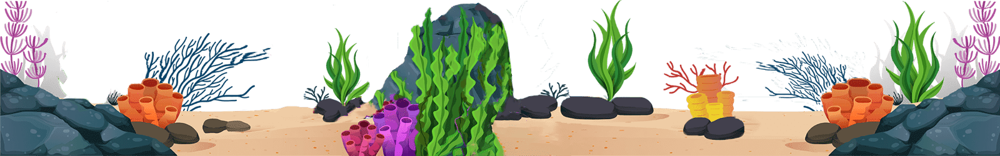

<!DOCTYPE html>
<html lang="en">


</html>
<head>
<meta charset="UTF-8">
<meta name="viewport" content="width=device-width, initial-scale=1.0">
<meta name="description" content="Explore the interaactive Halloween Party Project, showcasing responsive design, animation and web development Tech.">

<link rel="stylesheet" href="style.css">
<link rel="stylesheet" href="https://cdnjs.cloudflare.com/ajax/libs/font-awesome/7.3.1/css/all.min.css">

</head>

<body>
    <header id="header">
        <a href="#" class="logo">Parallax</a>
        <ul>
            <!-- <---Add the Active class here in Home-->
            <li><a href="#" class="">Home</a></li>
            <li><a href="#">About</a></li>
            <li><a href="#">Contact</a></li>
        </ul>
    </header>

    <!-- Land Section -->
    <section>
        
        
        
        
        <h2 id="text"><span>"Embrace the Thrill of"</span><br>Exploration</h2>
        
        
        
        <a href="#" id="explore">Explore</a>
        
        
        
    </section>
 
    <div class="sec" id="sec">

        
        
        
        
        
        
        
        

        <h2>Parallax Scrolling Effects</h2>
        <div id="name">By Nitya</div>

        <br>


        <div class="glass">
            <h3>What is Parallax Scrolling?</h3>
            <p>
                Parallax scrolling is a web design technique in which different elements on a webpage move at different speeds when the user scrolls up or down.
                 Usually, the background image moves more slowly than the foreground content, creating an illusion of depth and movement. 
                 This effect makes a website look more attractive, interactive, and visually interesting. 
                 Parallax scrolling is commonly used on landing pages, portfolios, online stores, and storytelling websites to create a smooth and engaging user experience. 
                 For example, when a user scrolls down a webpage, the text and images in the foreground may move quickly while the background image moves slowly, making it appear as if the background is farther away. 
                 Parallax scrolling can be created using CSS, JavaScript, or animation libraries. 
                 However, it should be used carefully because too many animations can affect website performance and may make the page difficult to use for some users. 
                Overall, 
                parallax scrolling is an effective technique for adding depth, motion, and visual appeal to modern websites.
            </p>
        </div>

        <div class="glass">
            <h3>Why Should i use Parallax Graphics?</h3>
            <ul>
                <p>Well, There are two main reasons why designers use Parallax Graphics:</p>
                <li>
                    <h4>It Helps tell a story</h4>
                    <p>
                        Parallax graphics can make a website feel like a visual story that unfolds as the user scrolls through the page. 
                        Instead of showing all the information at once, designers can reveal different images, text, animations, and visual elements step by step. 
                        As the user scrolls, background and foreground elements move at different speeds, creating a sense of depth and movement. 
                        This allows designers to guide the user's attention from one section to another and explain a product, service, idea, or concept in a more interesting way. 
                        For example, a company selling a new product can use parallax scrolling to introduce the product, show its features one by one, demonstrate how it works, and finally encourage the user to purchase it.
                    </p>
                </li>
                <li>
                    <h4>It helps to improve user engagement</h4>
                    <p>
                        Parallax graphics can make users more interested in a website because the page responds visually as they interact with it. 
                        When images, text, and other elements move as the user scrolls, the website feels more dynamic and interactive than a simple static page. 
                        This can encourage visitors to continue scrolling and explore more of the content. 
                        The movement can also be used to highlight important information, direct attention toward specific elements, and create visual surprises as new content appears. 
                        For example, a website might reveal an animation or product feature when the user reaches a particular section, encouraging them to keep exploring.
                    </p>
                </li>
            </ul>
        </div>

        <div class="glass">
            <h3>If you want to add a Parallax Scrolling Effects to your web App, You should Consider these few steps.</h3>
            <ul>
                <li aria-level="1">
                    <h4>Use it selectively</h4>
                    <p>
                        Parallax scrolling is much more powerful when you use it on one particular element as ooposed 
                        to all pages and all the time. Use it in Headers and Titles, or maybe homepage only ,
                        honestly it's your personal choice, but should be used limited. 
                    </p>
                </li>
                <li aria-level="1">
                    <h4>Image Commpression</h4>
                    <p>
                        Parallax scrolling uses a lotttttt of different media files and CSS shapes to create a sense of effect(honestly, AAAAA mannn suchhh a Draggg).
                        You don't want to compromise the performance of you web app as well as users experience.
                    </p>
                </li>

                <li aria-level="1">
                    <h4>Play with Colorrrrsss</h4>
                    <p>
                        Well Well Parallax scrolling is not only image and using it selectively, it's about you how much you can create or combination of colors you can 
                        use to show your creativity & let others see about your skills. But it doesn't matter as long it makes you happy yourself.
                    </p>
                </li>
            </ul>
        </div>

        
        
        
        
        

        <div class="bubbles">
            
            
            
            
            
            
            
        </div>
    </div>

    <div class="footer" id="footer">
        Check out my: 
        <div class="wrapper">
            <div class="social-media">
                <div class="icon">
                    <i class="fa-brands fa-github"></i>
                </div>
                <span>Github</span>
            </div>
            <div class="social-media">
                <div class="icon">
                    <i class="fa-brands fa-instagram"></i>
                </div>
                <span>Instagram</span>
            </div>
        </div>
        <span>A Web App By Nitya :/</span>
    </div>

    <a id="top" href="#"><i class="fas fa-arrow-up" ></i>
</a>
</body>

<script src="script.js"></script>
</html>